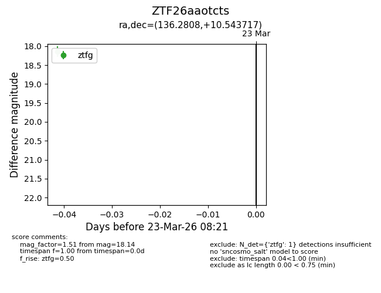
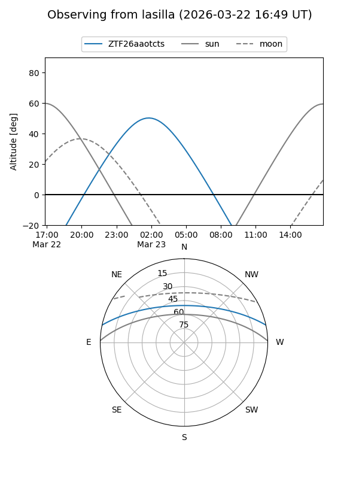
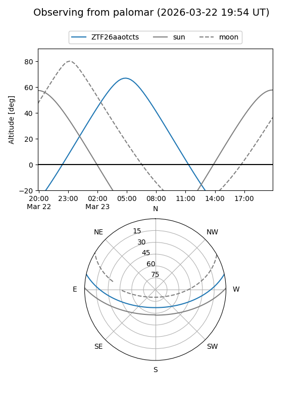

ZTF26aaotcts
Target ZTF26aaotcts at 2026-03-23 08:23
Aliases and brokers:
FINK: link
Lasair: link
ALeRCE: link
alt names
ZTF26aaotcts (ztf,fink_ztf)
Coordinates:
equatorial (ra, dec) = 136.2808,+10.54372
equatorial (HMS+DMS) = 09:05:07.40,+10:32:37.38
galactic (l, b) = (218.7809,+34.42728)
Flags:
Photometry:
last ztfg=18.14
1 ztfg detections
Lightcurve

Visibility


Additional plots